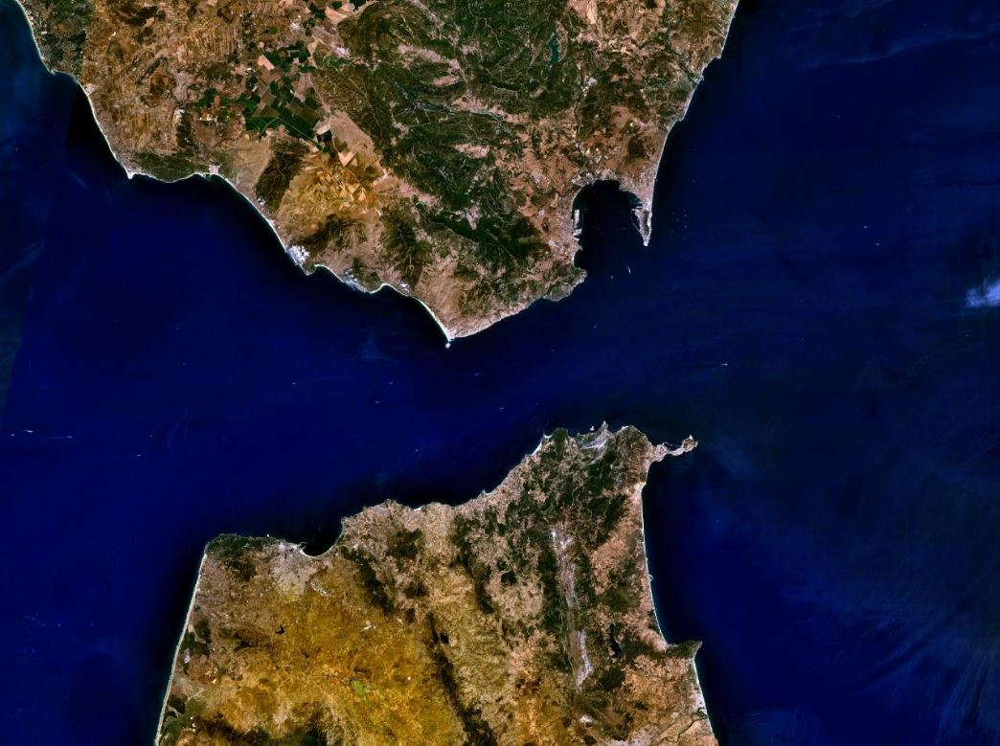
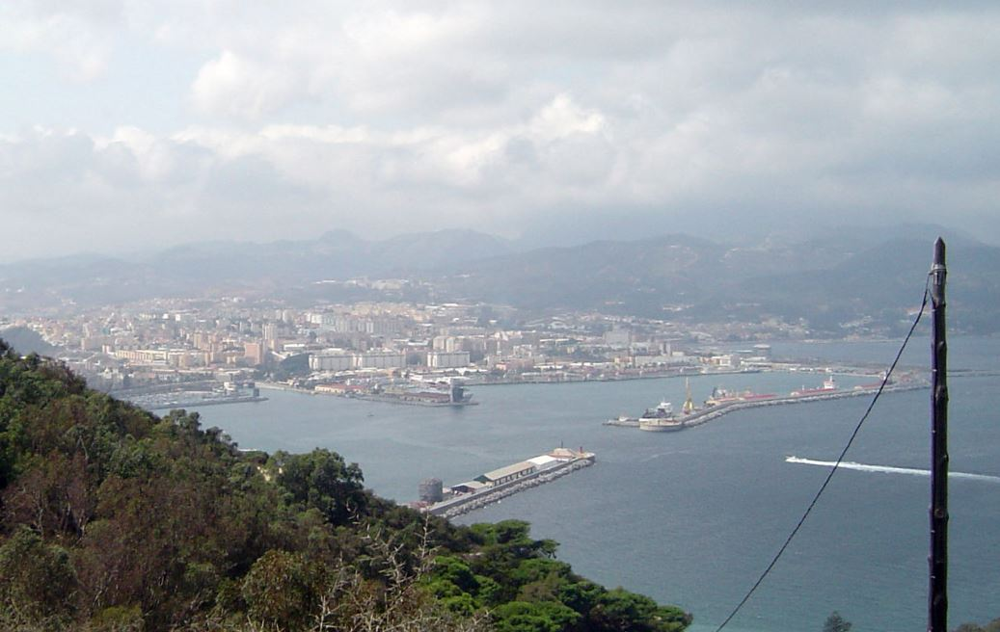
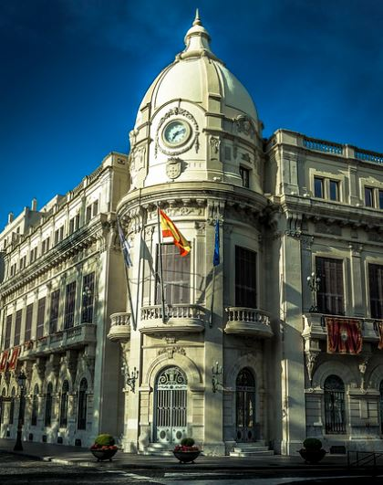

BREVE RESEÑA DE NUESTRA HISTORIA

Ceuta es una ciudad autónoma española, situada en la península tingitana, en la orilla africana del estrecho de Gibraltar, en el lado oriental de este. Está bañada por las aguas del mar Mediterráneo, mientras que al oeste y suroeste limita con Marruecos. Su población es de 83 229 habitantes (INE 2024). Con una extensión superficial de 18,5 km², tiene una densidad de 4592,38 hab/km², en la que conviven ciudadanos de diferentes religiones: la cristiana, la musulmana, la judía y, en menor medida, la hindú. Las zonas urbanizadas se sitúan en el istmo y en parte del campo exterior. El centro urbano y los barrios más antiguos se localizan cerca del puerto y por la ladera del monte Hacho, en una pequeña península conocida como Almina.
Estrecho de Tingitana
Puerto de Ceuta
Gracias a su situación estratégica, el puerto de Ceuta tiene un importante papel en el paso del estrecho, así como en las comunicaciones entre el mar Mediterráneo y el océano Atlántico. Debido a la accidentada orografía y la escasez de agua, de energía y de materias primas, tanto el sector primario, con excepción de la pesca, como el secundario tienen un escaso peso en la economía. Asimismo, el sector de la construcción está muy restringido, debido a la carestía de suelo. No obstante, Ceuta tiene el estatus de puerto franco y una serie de ventajas fiscales que favorecen el comercio. Su frontera terrestre la separa del Rincón-Castillejos y de la provincia de Fahs-Anyera, ambas pertenecientes a la región Tánger-Tetuán-Alhucemas.
La ciudad de Ceuta se constituyó como ciudad autónoma en 1995, a pesar de que la Constitución española de 1978 reconoce su derecho a constituirse en comunidad autónoma, en su Disposición Transitoria Quinta. No obstante, a nivel de educación superior, depende de la Universidad de Granada desde los años 1940,4 judicialmente está adscrita a la demarcación del Tribunal Superior de Justicia de Andalucía, Ceuta y Melilla, con sede en Granada, y eclesiásticamente se encuadra dentro de la diócesis de Cádiz y Ceuta.
Ayuntamiento de Ceuta
